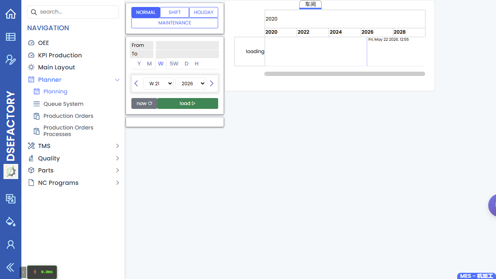

计划
English | 中文
Path: Planner / Planning URL: <APP_BASE_URL>/Production/Planning
页面用途
Planning 用于把已计划或已释放的作业放入可执行的排程中，方便主管和操作员跟进。计划员用这个页面检查时间、负荷和作业位置。
你会看到什么
- 带有日期、机台、组别或视图控制的计划工作区。
- 根据所选视图显示为行、卡片或时间块的排程作业。
- 可缩小期间或生产区域的筛选条件。
- 用于刷新和复查所选作业的操作。
你会做什么
- 选择演示需要的日期范围和生产区域。
- 找到工单并确认它排在什么位置。
- 只有在屏幕操作和业务场景允许时才调整计划。
- 交接前，把计划与工单和队列系统进行对照。
要检查什么
- 所选期间显示了预期作业。
- 作业显示在正确的机台、组别或计划区域下。
- 排程顺序在主管复查队列前是合理的。
- 在判断作业缺失前，先确认筛选条件没有限制结果。
常见问题
| 问题 | 含义 |
|---|---|
| 计划视图为空 | 日期、机台组或页面筛选可能排除了该作业。 |
| 作业出现在错误区域 | 释放前可能需要复查排程。 |
| 队列与计划不一致 | 重新检查释放状态和队列筛选条件。 |
相关页面
截图
